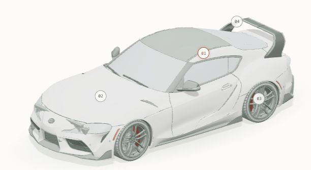

01 ПОД КАПОТОМ
Шесть цилиндров.
Один ритм.
Под длинным капотом работает трёхлитровая рядная шестёрка B58 с одной турбиной twin-scroll. В версии для США она развивает 382 hp и 499 Н·м, а пик момента доступен с 1800 об/мин.
TOYOTA GR SUPRA / A90 · ПЯТОЕ ПОКОЛЕНИЕ
От первой Celica Supra до современной A90.
Смотрите, как автомобиль раскрывается по деталям, и слушайте его историю.

1978 → 1993 → 2019
От Celica Supra к пятому поколению GR Supra
История Supra началась в 1978 году.
FILM 01 / ВНУТРИ ДВИЖЕНИЯ
Поршни, коленвал и привод — крупным планом. Ролик показывает работу двигателя и процесс создания его 3D-визуализации.
ВИЗУАЛИЗАЦИЯ · STYLERVFX 01:06Не удалось запустить видео. Открыть ролик отдельно ↗
01 ПОД КАПОТОМ
Под длинным капотом работает трёхлитровая рядная шестёрка B58 с одной турбиной twin-scroll. В версии для США она развивает 382 hp и 499 Н·м, а пик момента доступен с 1800 об/мин.
02 ПУТЬ К АСФАЛЬТУ
Коробка передач, кардан и активный задний дифференциал передают тягу на задние колёса. На выбор — восьмиступенчатый автомат или шестиступенчатая механика iMT, которая согласует обороты при переключениях.
03 СВЯЗЬ С ДОРОГОЙ
Спереди — стойки MacPherson, сзади — многорычажная подвеска. Адаптивные амортизаторы меняют характер её работы, а передние четырёхпоршневые суппорты Brembo сжимают вентилируемые диски диаметром 348 мм.
Характеристики GR Supra 3.0, 2025, США. Toyota · технические данные ↗
ЯПОНСКИЕ ИКОНЫ/ ВЫПУСК 001
Пятое поколение. Каждая линия имеет смысл.
Разберите Toyota GR Supra A90 на детали.
Приближайте. Вращайте. Исследуйте.
02 / СЕРДЦЕ МАШИНЫ
B58 — продольно установленная трёхлитровая рядная шестёрка с алюминиевым блоком. Одна турбина twin-scroll использует два канала для потока выхлопных газов.
Впуск, топливная рампа, охлаждение и трансмиссия образуют один механизм. Разборка открывает отдельную поясняющую схему этих узлов.
03 / БОЛЬШЕ, ЧЕМ МАШИНА
Мировой дебют GR Supra пятого поколения: короткая база, задний привод и новый кузов с двойным изгибом крыши.
Для версии с рядной шестёркой появляется шестиступенчатая механическая коробка iMT. Больше контроля в каждом переключении.